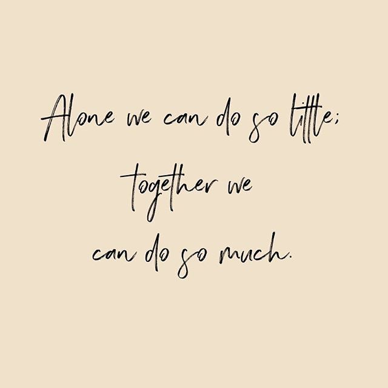

“You are not your illness. You have an individual story to tell. You have a name, a history, a personality. Staying yourself is part of the battle” (Julian Seifter)
I have had a lot of anxiety and depression for what seems like my whole life, but probably started around primary school.
At Primary school, I experienced bullying which made me not want to go to school nor did it make me think that people liked me for who I am. After what I faced in primary school, it made me feel very anxious to go onto intermediate and high school, as I was a very shy person.
Intermediate and highschool was a lot better because I made friends and was in classes with my friends. However my anxiety and depression also got a lot worse at school.
I had a year at school where I had no friends in any of my classes and experienced a toxic friendship which included the person blackmailing and threatening me. What made it extremely worse was the fact that the person’s family got involved with the bullying and threats as well.
Every single day and night after this occurred I struggled enormously. Some days I did not go to school, I barely got enough sleep and thought that I did not belong here. I went to see the school counsellor because I thought if I told her, it would make things better.
Seeing the school counsellor (who was the counselor at the time) did not help me out one bit. She, in fact knew the person that was doing this to me quite well and had a family member who had taught her at school too. I remember her telling me “just talk it out between you two it will be better”.
But luckily at the same time, I was seeing the School Nurse and I told her everything. Eventually the School Nurse told my mum the situation about what was going on. I am so grateful that the School Nurse at the time told my mum because I don’t think that I would have had the willpower to tell my parents what was going on.
My parents had to contact the school because of how bad everything was. The school had put in place some rules to help me cope with this situation but despite these rules in place the person kept on finding ways to be in the same room as me.
I got blamed for everything that supposedly the person said I did, but in fact I did not do. From all the blaming on me for what I have not done, the person reported me to the KIVA Programme(bullying programme) stating the things that I “did” to her. From this moment all I wanted was for everything to be over.
I finally got the help I needed from therapists, going on antidepressants and still having good support from those around me that understood and loved me.
I know how hard it is to face a mental health illness, but what I wish was that I could have talked to my parents in the beginning. I now realize how important it is to communicate with those around you regarding how you are feeling.
If you are facing a mental health illness, I just want to let you know that you are not alone. There are people there to support you, even if you think nobody will listen to you. Try talking to people you trust and things will be better in the end.
